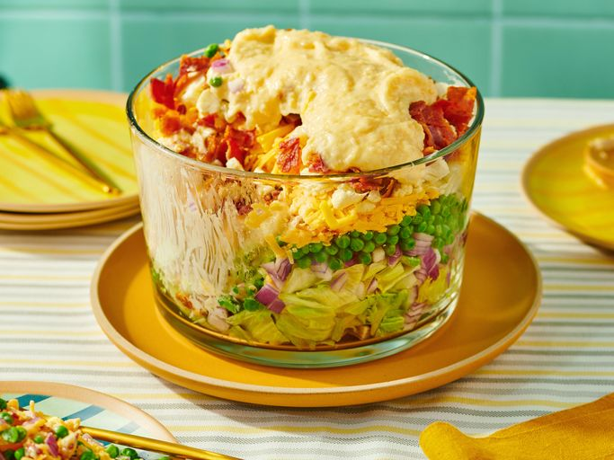

Seven Layer Salad

Description
This 7-layer salad looks great in a large glass bowl. I usually make it with bacon, lettuce, red onion, pea,
Cheddar cheese, and cauliflower but you can vary the type of onions, cheese, etc. There's never too much because
everybody loves it!
Ingredients
For the salad:
- a pound of bacon
- iceberg lettuce
- a red onion
- a package of frozen peas
- shredded Cheddar cheese
- a cup of chopped cauliflower
For the dressing:
- mayonnaise
- grated Parmesan cheese
- white sugar
Steps
- Cook the bacon.
- Assemble the salad.
- Make the dressing and drizzle over the salad.